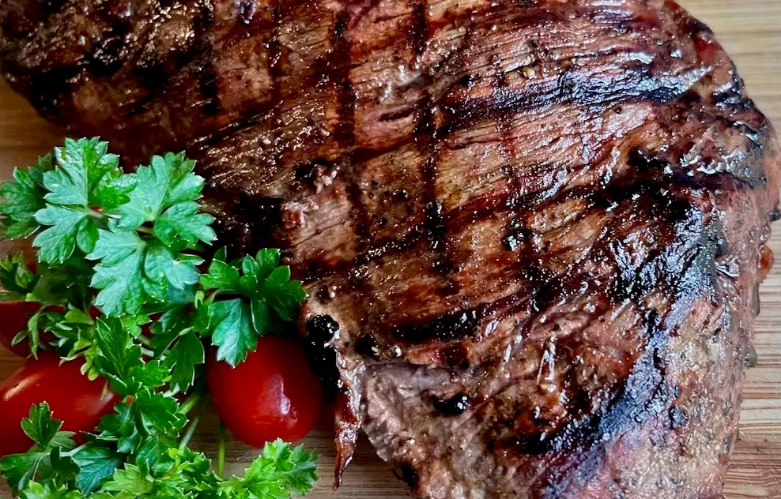

Grilled marinated chicken, topped with melted mozzarella, pesto, and cherry tomatoes makes a delicious summer meal! Serve with rice or angel hair pasta.Grilled marinated chicken, topped with melted mozzarella, pesto, and cherry tomatoes makes a delicious summer meal! Serve with rice or angel hair pasta.
Combine balsamic vinaigrette, Worcestershire sauce, Dijon mustard, lime juice, and pepper in a gallon-size resealable plastic bag. Press out most of the air, seal the bag, and gently squeeze the ingredients to mix together.
When marinade is well mixed, add tri-tip, making sure all sides are coated with the marinade. Squeeze out as much air as possible, seal the bag, and allow to marinate in the refrigerator for at least 8 hours, turning occasionally.
Preheat an outdoor gas grill to 400 degrees F (200 degrees C), according to manufacturer's recommendations, making sure grill grates are clean. Saturate a paper towel with cooking oil, and use tongs to rub oil on the grate.
Place tri-tip on oiled grate, close the lid, and grill for 3 minutes. Using tongs or a meat fork, rotate meat a quarter-turn, close the lid, and grill for another 3 minutes. Flip the meat and repeat.
RLeaving one burner on, turn off the burner on one side of the grill and move the tri-tip to the unheated side. Close the lid and continue cooking for 5 or 6 minutes, depending on the thickness of the meat.